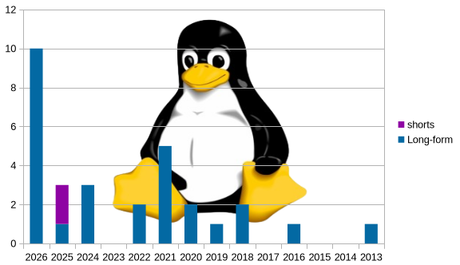

This whole page is literally just a graph
published 21/07/2026

I might have repeated or missed a video or two, so don't quote me on this data. The fact that the first half of 2026 had more Linux videos than any other year stands for sure though.